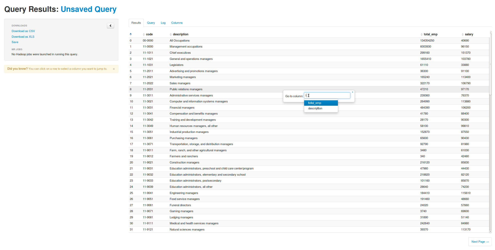
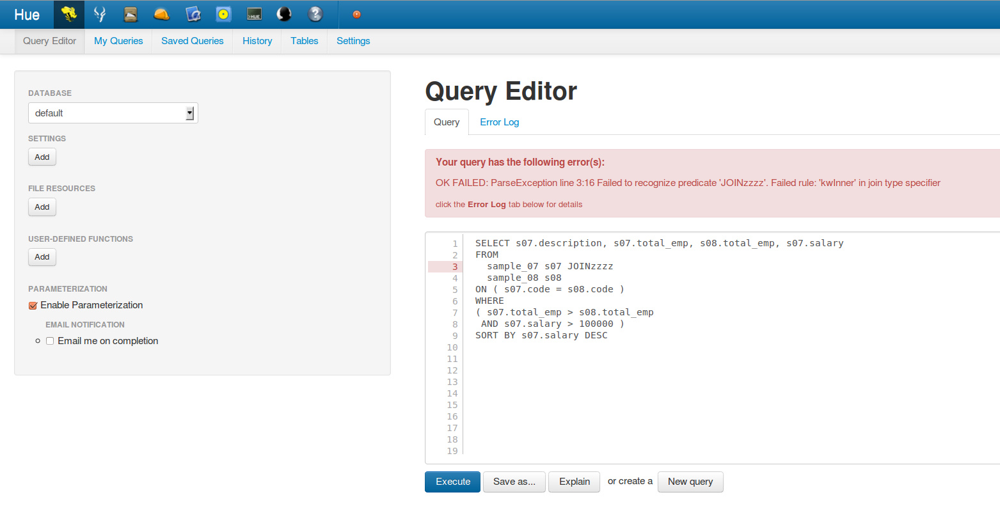
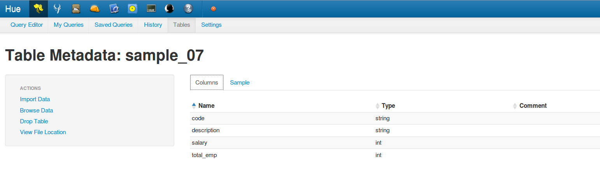
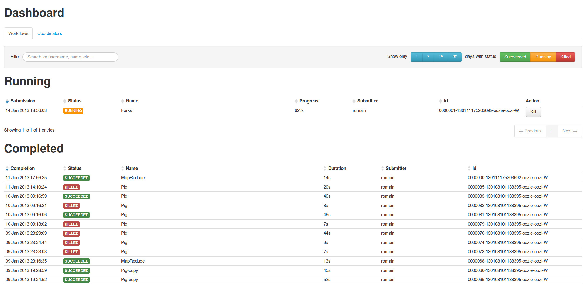
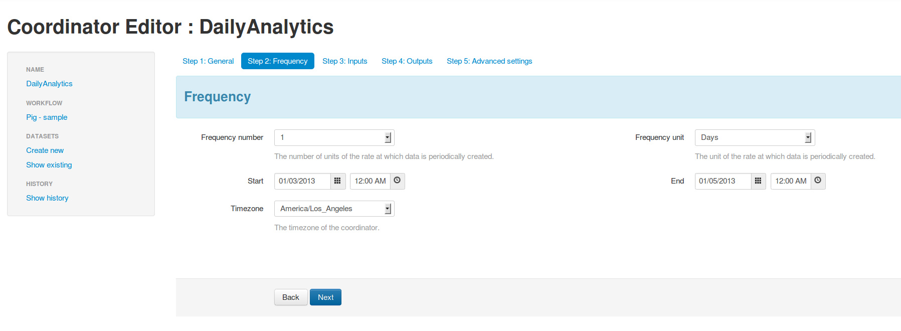
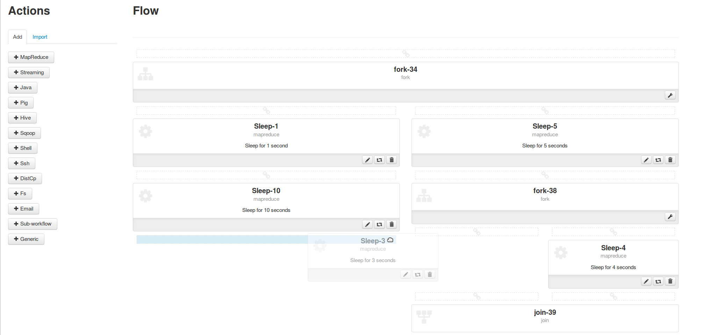
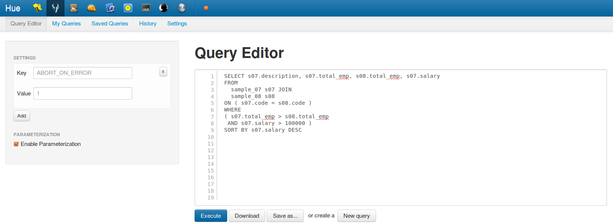

hue 
Hue is an open source web-based application for making it easier to use Apache Hadoop.
Hue features a file browser for HDFS, an Oozie Application for creating workflows and coordinators, a job designer/browser for MapReduce, Hive and Impala query editors, a Shell, a collection of Hadoop API.
Apps
Beeswax
  Oozie
  File Browser
Impala
Job Browser
Shell
User Admin
Hue 2.1.0 - Oct 2, 2012
Hue now provides an Apache Oozie application for creating workflows of Apache MapReduce, Apache Pig, Apache Hive, Apache Sqoop, Java, Shell, Ssh and Streaming jobs and scheduling them repetitively. Hue is now available in German, Spanish, French, Japanese, Korean, Portuguese, Brazilian and simplified Chinese.
It works with Cloudera's Distribution for Apache Hadoop (CDH) version 4.1.
Hue 2.0.1 - June 4, 2012
Hue 2.0.1 is a major upgrade with many fixes and key new features. The frontend has been re-implemented, LDAP (OpenLDAP and Active Directory) and per-application authorization are supported, a Shell application was added.
It works with Cloudera's Distribution for Apache Hadoop (CDH) version 4.
Hue 1.2.0 - Feb 21, 2011
Hue 1.2.0 is a minor release, largely focused on bug fixes and compatibility with CDH3.
Hue 1.1.0 - Oct 11, 2010
Hue 1.1.0 supports Kerberos integration with using a secured Hadoop cluster. It works with CDH3.
Hue 1.0.1 - Aug 20, 2010
Hue 1.0.1 works with a traditional Hadoop cluster that does not have security features.
Download
- Download Hue's project source in either zip or tar formats.
- Get the source code on GitHub : cloudera/hue
- Clone the project with Git
by running:
$ git clone git://github.com/cloudera/hue
License
Apache License v2.0
http://www.apache.org/licenses/LICENSE-2.0